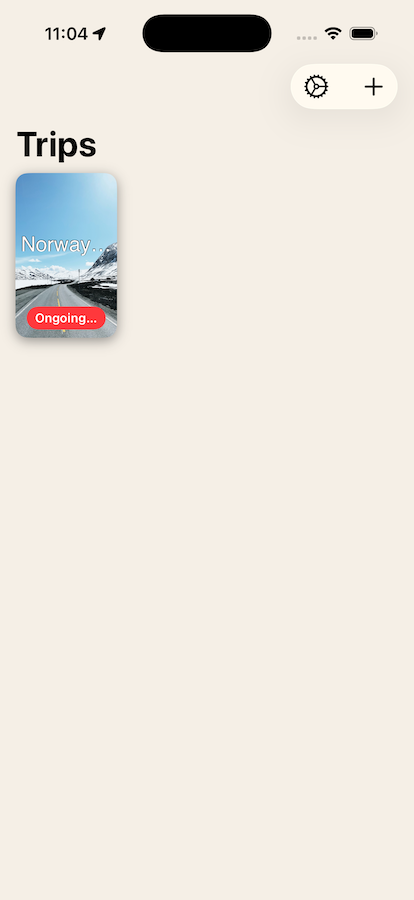
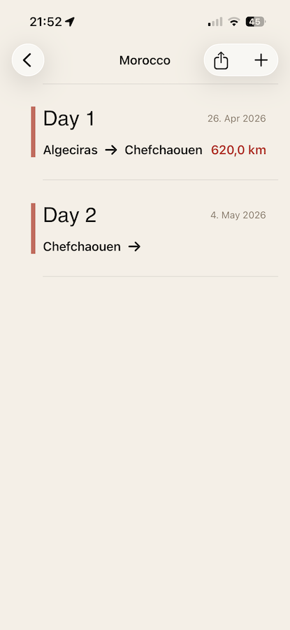
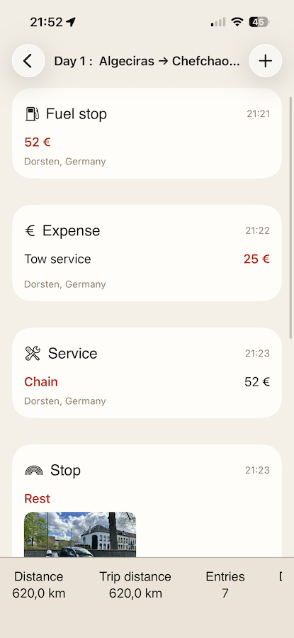
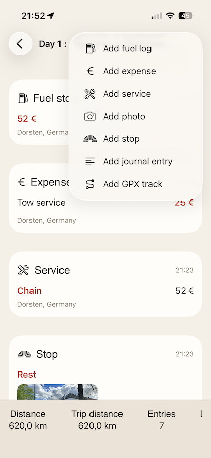
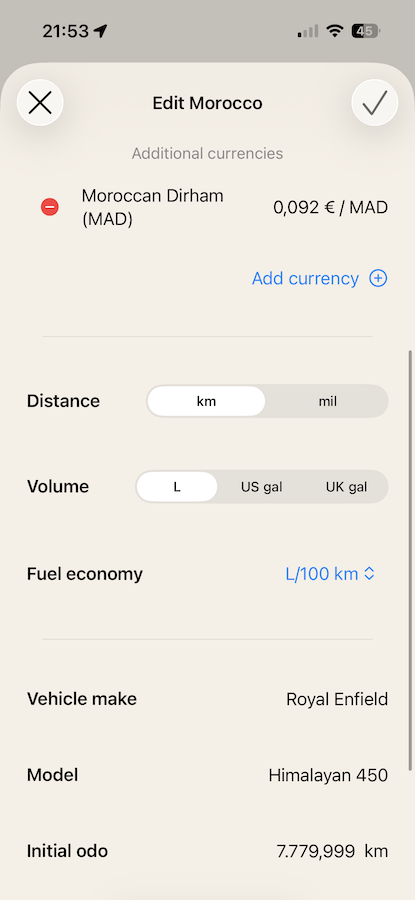

<style>
    /* Header */
    header {
        padding: 100px 30px 80px;
        text-align: center;
        background: #fafbfc;
    }
    
    h1 {
        font-size: 3.2em;
        margin-bottom: 20px;
        font-weight: 600;
        color: #1a1a1a;
        letter-spacing: -0.5px;
    }
    
    .subtitle {
        font-size: 1.3em;
        color: #5a6c7d;
        margin-bottom: 15px;
        font-weight: 400;
    }
    
    .meta {
        font-size: 1em;
        color: #7a8a9a;
        margin-bottom: 40px;
    }
    
    .download-btn {
        display: inline-block;
        background: #000000;
        color: white;
        padding: 14px 40px;
        text-decoration: none;
        border-radius: 8px;
        font-weight: 500;
        font-size: 1em;
        transition: background 0.2s;
    }
    
    .download-btn:hover {
        background: #333333;
    }

    /* Main Content */
    section {
        padding: 70px 30px;
    }
    
    section:nth-child(even) {
        background: #fafbfc;
    }
    
    h2 {
        font-size: 2em;
        margin-bottom: 40px;
        font-weight: 600;
        color: #1a1a1a;
        text-align: center;
    }
    
    /* Features */
    .features-list {
        max-width: 800px;
        margin: 0 auto;
    }
    
    .feature {
        margin-bottom: 50px;
    }
    
    .feature h3 {
        font-size: 1.4em;
        margin-bottom: 12px;
        color: #2c3e50;
        font-weight: 600;
    }
    
    .feature p {
        font-size: 1.05em;
        color: #5a6c7d;
        line-height: 1.7;
    }

    /* Entry Types Grid */
    .entry-grid {
        display: grid;
        grid-template-columns: repeat(auto-fit, minmax(280px, 1fr));
        gap: 20px;
        max-width: 900px;
        margin: 0 auto;
    }
    
    .entry-item {
        background: #ffffff;
        border: 1px solid #e0e0e0;
        padding: 25px;
        border-radius: 6px;
        font-size: 1.05em;
        color: #2c3e50;
    }

    section:nth-child(even) .entry-item {
        background: #ffffff;
    }
    
    /* Screenshots */
    .screenshot-grid {
        display: flex;
        justify-content: center;
        gap: 30px;
        flex-wrap: wrap;
        margin-top: 50px;
    }
    
    .screenshot-placeholder {
        width: 240px;
        height: 520px;
        border-radius: 20px;
        box-shadow: 0 4px 12px rgba(0,0,0,0.1);
    }
    
    @media (max-width: 768px) {
        h1 {
            font-size: 2.2em;
        }
        
        .subtitle {
            font-size: 1.1em;
        }
        
        h2 {
            font-size: 1.6em;
        }
    }
</style>

<!-- Header -->
<header>
    <div class="container">
        
        <h1>Road Trip Journal</h1>
        <p class="subtitle">Your Personal Travel Diary for the Road</p>
        <p class="meta">No Ads • Privacy-First</p>
        <a href="#" class="download-btn">Download on the App Store</a>
    </div>
</header>

<!-- Purpose -->
<section>
    <div class="container">
        <h2>Purpose</h2>
        <div class="features-list">
            <div class="feature">
                <p>Road Trip Journal is a travel diary built for people who want to remember their journeys properly. Whether you're crossing a country on a motorcycle or taking a long road trip, it gives you a structured way to document each day — your stops, your expenses, your fuel, your photos, and the moments worth writing down. Everything stays on your device, organised by trip and day, always private.</p>
            </div>
        </div>
    </div>
</section>

<!-- About This Project -->
<section>
    <div class="container">
        <h2>About This Project</h2>
        <div class="features-list">
            <div class="feature">
                <p>I built Road Trip Journal because I kept coming back from trips with a mess of notes, scattered photos, and fuel receipts I could barely read. I wanted something that felt like a proper travel journal — not just a spreadsheet or a note-taking app — where I could look back at a trip and actually relive it day by day.</p>
                <p>Every detail in the app comes from real needs on the road: tracking fuel consumption across different countries, logging expenses in local currencies, dropping a pin when you find a place worth remembering, recording a GPX track of a great route. It's built for the kind of trip where the journey itself is the point.</p>
                <p>Like all my apps, contains no ads, and collects no data. Just a tool that does what it's supposed to do.</p>
            </div>
        </div>
    </div>
</section>

<!-- Features -->
<section>
    <div class="container">
        <h2>Features</h2>
        <div class="features-list">
            <div class="feature">
                <h3>Trips and Days</h3>
                <p>Organise your travel as trips, each divided into days. Every day holds its own entries, giving you a clear timeline of your journey from start to finish.</p>
            </div>
            <div class="feature">
                <h3>Seven Entry Types</h3>
                <p>Log what matters: journal notes, stops, expenses, fuel, photos, GPS tracks, and vehicle maintenance. Each entry type is designed around how you actually travel.</p>
            </div>
            <div class="feature">
                <h3>Fuel Tracking</h3>
                <p>Record fuel stops with volume, cost, and odometer readings. The app calculates consumption automatically, so you always know what your vehicle is using.</p>
            </div>
            <div class="feature">
                <h3>Expense Tracking</h3>
                <p>Log expenses in any currency with automatic conversion. Keep a running total of what a trip costs you, broken down by day.</p>
            </div>
            <div class="feature">
                <h3>GPS Tracks</h3>
                <p>Import GPX files to record the routes you ride or drive. Your tracks are stored locally and never transmitted externally.</p>
            </div>
            <div class="feature">
                <h3>Photos</h3>
                <p>Attach photos to any entry directly from your camera or photo library. All photos are stored on your device or synced privately through iCloud.</p>
            </div>
            <div class="feature">
                <h3>iCloud Sync</h3>
                <p>Optionally sync your trips across devices using your personal iCloud account. All data remains encrypted and private — it never passes through our servers.</p>
            </div>
            <div class="feature">
                <h3>Face ID Protection</h3>
                <p>Secure your travel diary with Face ID. Authentication happens entirely on your device using Apple's biometric framework.</p>
            </div>
            <div class="feature">
                <h3>Privacy-First Design</h3>
                <p>No accounts. No external servers. No analytics. No data collection. Everything stays on your device unless you choose to enable iCloud sync.</p>
            </div>
        </div>
    </div>
</section>

<!-- Entry Types -->
<section>
    <div class="container">
        <h2>Entry Types</h2>
        <div class="entry-grid">
            <div class="entry-item"><strong>Journal</strong><br>Free-text notes for the day's story</div>
            <div class="entry-item"><strong>Stop</strong><br>Places visited with location and notes</div>
            <div class="entry-item"><strong>Expense</strong><br>Costs in any currency with conversion</div>
            <div class="entry-item"><strong>Fuel Log</strong><br>Fill-ups with consumption calculation</div>
            <div class="entry-item"><strong>Photo</strong><br>Images from camera or photo library</div>
            <div class="entry-item"><strong>GPS Track</strong><br>GPX route files for your roads</div>
            <div class="entry-item"><strong>Maintenance</strong><br>Vehicle service and repair records</div>
        </div>
    </div>
</section>

<!-- Screenshots -->
<section>
    <div class="container">
        <h2>Interface</h2>
        <div class="screenshot-grid">
            
            
            
            
            
        </div>
    </div>
</section>
